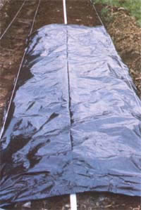

You don't have to alternately "dehydrate" or "flood" your garden to keep it watered.
Up until this year, my garden had always relied pretty much on what nature supplied in the way of rainfall. Sure, I'd get out the hose and sprinkler when we went too long between showers . . . but I generally watered when I had time to, not necessarily when the garden really needed moisture.
Now, I'm a convert to a new system of watering: drip irrigation. This trickle watering method brings a constant supply of liquid right to the roots of plants either by a plastic hose with small valves (called emitters) spaced every couple of feet . . . or by microporous plastic pipes that weep liquid along their entire length. Both systems share some very real advantages over conventional methods of watering. For one thing, drip setups use substantially less water . . . as much as a third less, according to some studies. That's because there is no runoff loss and much less evaporation than with sprinkling or furrow irrigation. And since the moisture is supplied just to the root area of the vegetables, few weeds get watered between the rows!
Especially important is the fact that the regular application of appropriate amounts of moisture reduces water stress on the vegetables. There's no cycle of dry/wet/dry... what Dan Cotten of Submatic Irrigation Systems compares to eating a huge turkey dinner every Thursday, and then fasting the remaining days of the week. Instead, the constant level of moisture leads to faster plant growth and earlier harvests (an important consideration if you're growing for market, where the early crop wins top dollar).
Of course, since the water is just in the soil and not on the leaves, many troublesome plant diseases never get a chance to start. (I'm hoping that a drip system will help control an anthracnose problem I've had with my tomatoes.) And there's another, somewhat unexpected, benefit that the setup confers: Studies in Israel have shown that you can grow salt-sensitive crops-such as cucumbers-in soil with a high sodium content if you use drip irrigation. It seems that the constant water pressure of the fed liquid forces salt in the soil to the outer edges of the wetted area, away from the plants' roots. This means that the feeder roots have to contend with only the sodium content of the water . . . not the more intense salinity built up in the soil.
Among the other benefits of drip irrigation are easier garden maintenance-a turn of the valve is all that's necessary to water your plants-and the potential for more efficient fertilizing. With drip irrigation, liquid nutrients can be delivered right to the root zone, so there's no waste. For instance, an elevated large trash bucket equipped with a strainer and outlet can be hooked into your irrigation system to deliver homemade manure tea.
Granted, a drip system does have some drawbacks. The technique is generally impractical for use with grain or grass crops (though it's perfect for a backyard corn patch). And its initial cost is greater than that of most other watering methods. You can amortize the expense over as many as ten years, however . . . and the garden's increased productivity should help pay off the cost.
This year, I'm trying out two drip systems: a hose and emitter setup from Submatic (Dept. TMEN, P.O. Box 246, Lubbock, Texas 79408) and a micropore tubing known as Viaflo-system from Irrigro (Dept. TMEN, 1555 Third Avenue, Niagara Falls, New York 14304). Irrigro tubing "sweats" water 'round the clock along its entire length, while the Submatic two-feet-apart emitters are cycled on and off every day. (Each system maintains the appropriate level of moisture in the soil, though.) The Submatic basic system is more expensive ($27.50 for 100 feet of tubing with 50 emitters installed) than the Irrigro ($14.95 for 100 feet of microporous tubing), but the former will probably last considerably longer.
I chose to use two-foot-wide raised beds because the uncompacted soil in such growing areas greatly enhances the penetration of irrigation water. After adjusting the soil pH, I rototilled the garden deeply. Then I excavated the foot-wide walkways, mounding the soil I'd removed onto the top of the beds. Next, I leveled the tops of my 15-foot-long plots.
With the hard work out of the way, and I could install the drip piping. I simply stretched the irrigation line along the center of a bed, making a U-turn at the end of it and laying the line over to-and then down-the next growing strip. Then I covered each bed with a three-foot wide band of 1.5-mil black plastic mulch. (If you lay the Irrigro system on top of the ground, you have to cover the line with black plastic to protect the white tubing from ultraviolet radiation . . . but either system can be run just under the surface of the soil.) Finally, I tucked the fringes of the plastic under the soil to anchor it.
Once the system was installed, I made slits for seeds and transplants with a single-edge razor blade, and then mulched the walkways with newspaper and spoiled hay. I'm using the garden hose for my water supply line now, but eventually I'll run a PVC line underground to the growing area.
Studies have shown that most problems folks encounter with drip systems are due to the emitters or micropores becoming clogged by particles in the water. Both systems can be flushed out, but preventive maintenance is a better idea. Submatic sells an effective hose strainer that filters out the bad stuff, and Irrigro has a filter screen that does the same job.
The other factor you may have to deal with is having to reduce water pressure, since full household water force could rupture your irrigation lines. The Irrigro setup comes with a built-in pressure reducer, but you may need to repair-or replace-your water valves if the faucet can't be adjusted low enough to supply the flow of two to four drops per second that the system requires. Submatic has a preset hose-threaded pressure regulator that can be screwed into the distribution line.
You can buy a timer for the Submatic system (because the Irrigro setup operates continuously, it doesn't need one), but that's pretty much a luxury.. As far as I'm concerned, the no-weed, no-work (I don't count turning a valve twice a day as work) ease of this kind of irrigation is luxury enough. All in all, drip irrigation seems a perfect method for "persuading" your water and plants to do more with less!
EDITOR'S NOTE: If you'd like to design your own drip system, all the necessary equipment pieces are available from The Urban Farmer, Dept. TMEN, 53R Rockwood Court, San Francisco, California 94127. This firm also offers Drip Irrigation: A User's Guide, one of the most extensive manuals on the topic, for $3.75 postpaid (a price that includes a $3.00 purchase credit certificate).
Or, if you'd like to create your line-watering system from scratch, we heartily recommend Scott D. Smith's article, `Drip More for Less'; on page 100 of MOTHER's Guide to (almost!) Foolproof Gardening . . . available for $3.95 plus $1.25 shipping and handling from Mother's Bookshelf , 105 Stoney Mountain Road, Hendersonville, North Carolina 28791.
|
 |
|
|